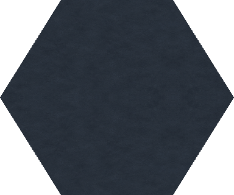
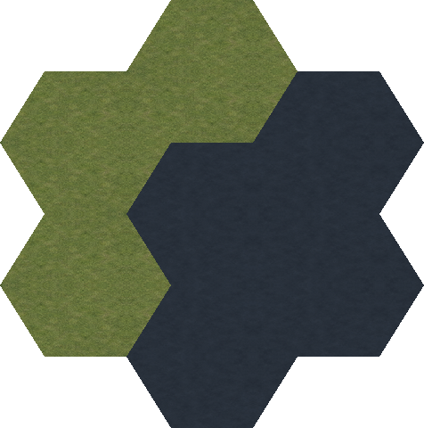
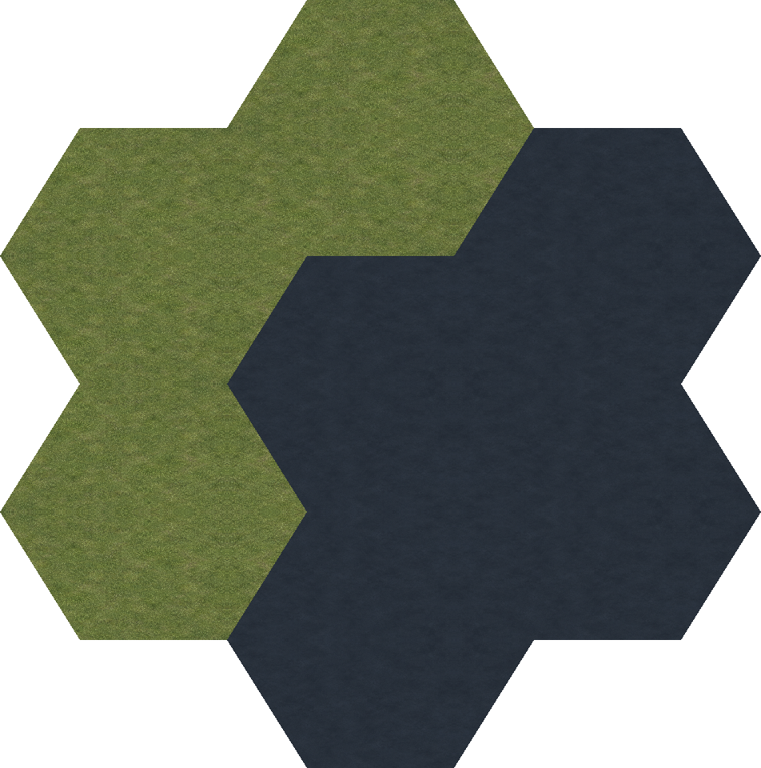
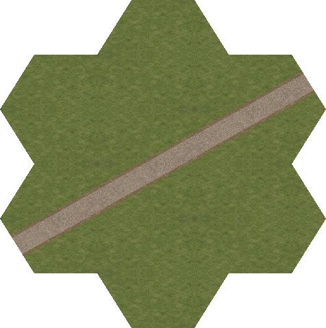
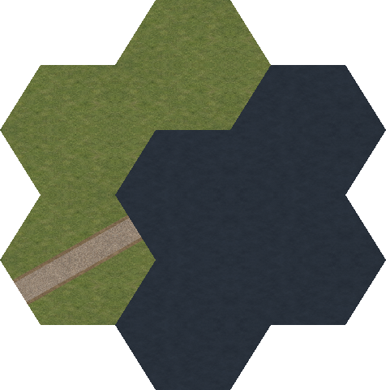
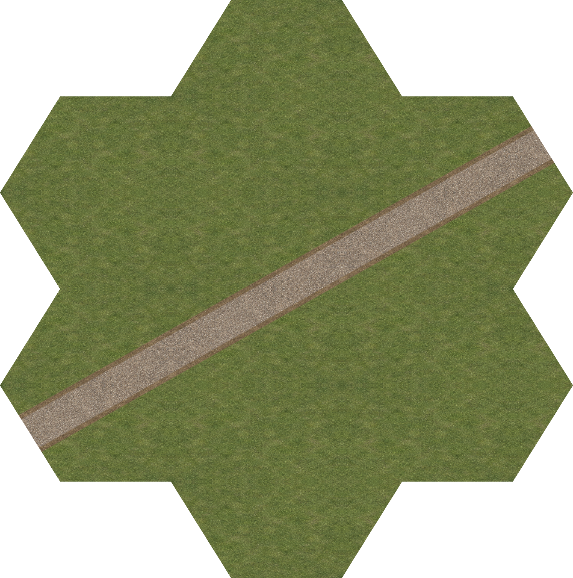
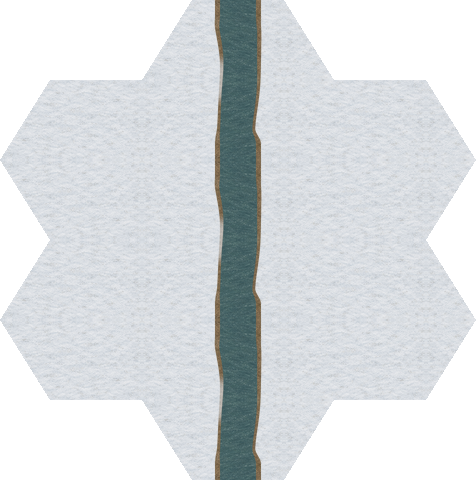
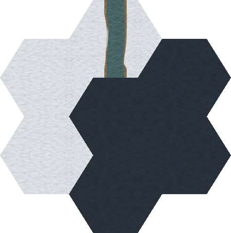
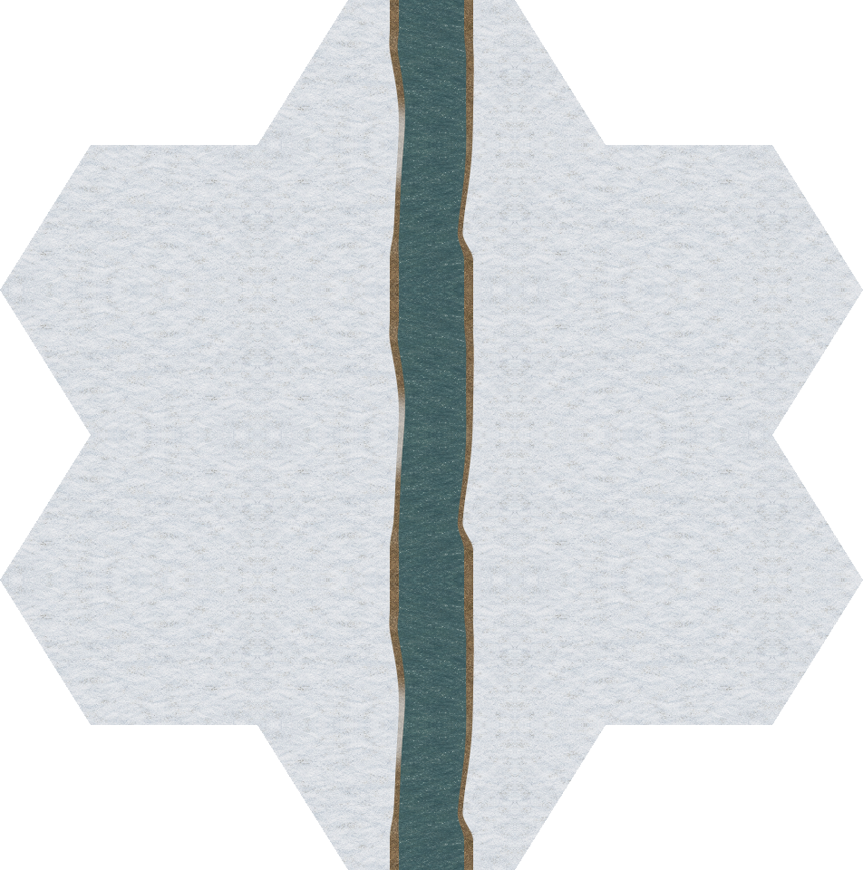
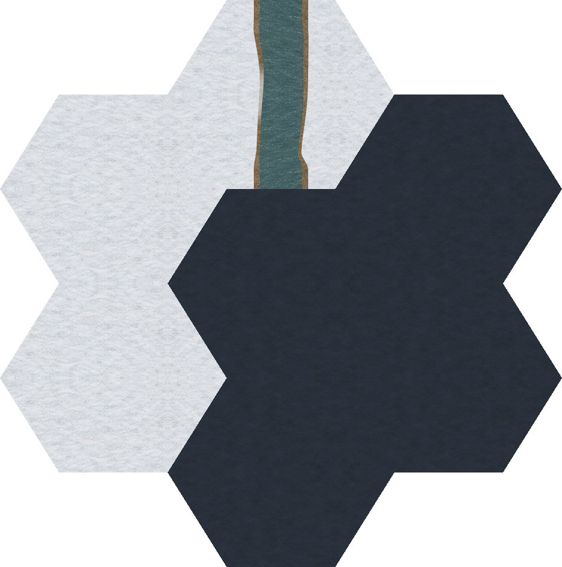

unseen · both densities



A quiet new dark slate material marks never-explored cells. Every owned pixel is opaque, so hidden terrain and routes reveal no information. Continuous 2×/4× artwork has no grid outline.
Provisional graphics candidate. Runtime integration and remembered/visible presentation remain open. All 134 enabled tile IDs now have candidate associations; eleven still need polygon/material integration, and broader graphics coverage remains open.
Review and verification · Visibility contract · Coverage · Terrain · Manifest · New source







Before and after hiding four cells. A route entering fog is concealed at the visibility boundary.


Before and after hiding four cells. A route entering fog is concealed at the visibility boundary.

Before and after hiding four cells. A route entering fog is concealed at the visibility boundary.


Before and after hiding four cells. A route entering fog is concealed at the visibility boundary.

